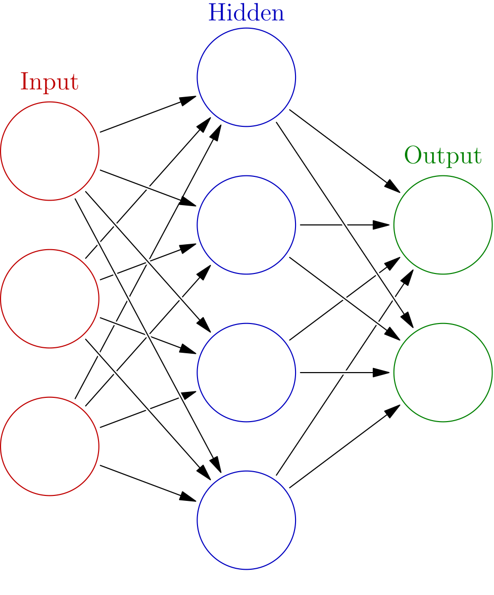

Deep Learning
Deep Learning is at the forefront of modern AI, powering breakthroughs in computer vision, natural language processing, and autonomous systems. This course provides comprehensive coverage of neural network architectures, from basic feedforward networks to advanced models like Transformers and GANs. Students will master the design, training, and tuning of deep neural networks using frameworks like TensorFlow and PyTorch. The course emphasizes both theoretical foundations and practical implementation, preparing students to develop state-of-the-art AI systems that form the basis of current technological advancements in industry and research.
Learning Objectives
- Understand the fundamentals of neural networks and backpropagation
- Master Convolutional Neural Networks (CNNs) for computer vision
- Implement Recurrent Neural Networks (RNNs) and LSTMs for sequence modeling
- Design and train Transformer architectures for NLP tasks
- Build Generative Adversarial Networks (GANs) for image generation
- Apply transfer learning and fine-tuning techniques
- Optimize deep learning models using advanced techniques
- Deploy deep learning models in production environments
Course Outline
-
Fundamentals:
- Neural networks and backpropagation
- Activation functions and optimization algorithms
- Regularization techniques: dropout, batch normalization
- TensorFlow and PyTorch frameworks
- CNN architectures: LeNet, AlexNet, VGG, ResNet
- Object detection: YOLO, R-CNN, Faster R-CNN
- Image segmentation: U-Net, Mask R-CNN
- Transfer learning with pre-trained models
- RNN fundamentals and vanishing gradients
- LSTM and GRU architectures
- Sequence-to-sequence models
- Attention mechanisms
- Transformer architecture and self-attention
- BERT, GPT, and large language models
- Generative Adversarial Networks (GANs)
- Variational Autoencoders (VAEs)
- Diffusion models
Convolutional Neural Networks:
Recurrent Neural Networks:
Advanced Architectures:


Deep Learning directly depends on the computational power of GPUs. This course will utilize GPUs for the design, training, and tuning of deep neural networks, enabling students to work with architectures that would be impossible to train on CPUs. GPU acceleration allows for training models with millions or billions of parameters, processing high-resolution images and videos in real-time, and experimenting with cutting-edge architectures like Transformers and diffusion models. Students will gain hands-on experience with CUDA, cuDNN, and GPU-optimized frameworks, preparing them for careers in AI research and development where deep learning is revolutionizing fields from autonomous driving to drug discovery.
Instructor
Deep Learning Instructor
Deep Learning and Neural Networks Specialist